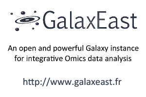
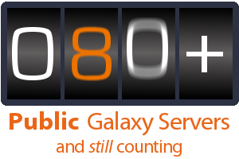
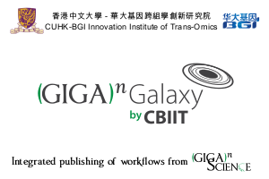
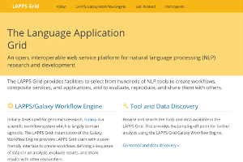
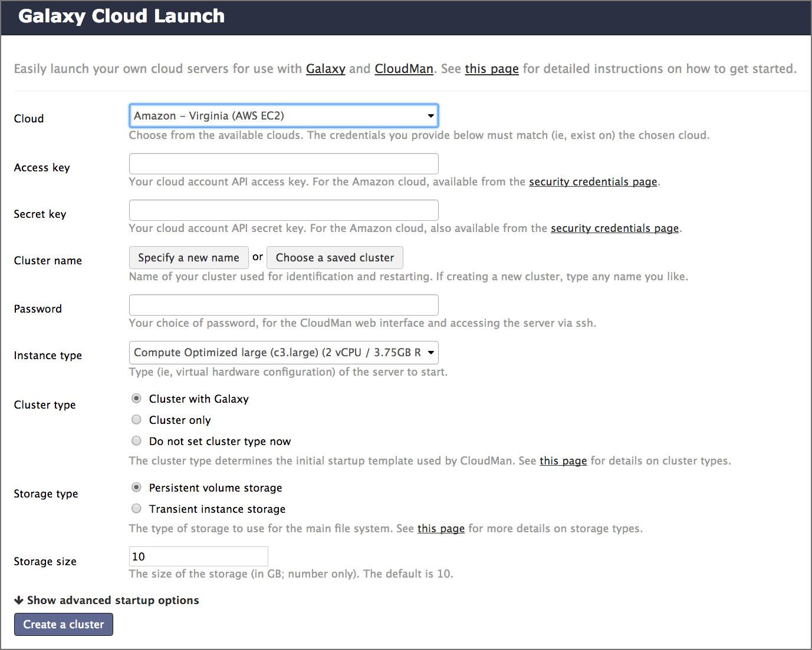

<!doctype html>
<html lang="en">

    <head>
        <meta charset="utf-8">

        <title>Options for using Galaxy</title>

        <link rel="stylesheet" href="../../shared/reveal.js/css/reveal.css">
        <link rel="stylesheet" href="../../shared/reveal.js/css/theme/simple.css" id="theme">

        <!-- Code syntax highlighting -->
        <link rel="stylesheet" href="../../shared/reveal.js/lib/css/zenburn.css">
        <link rel="stylesheet" href="../../shared/font-awesome/css/font-awesome.min.css">
        <link rel="stylesheet" href="../../shared/css/custom.css" id="theme">

        <!-- Printing and PDF exports -->
        <script>
          if( window.location.search.match( /print-pdf/gi ) ) {
            var link = document.createElement( 'link' );
            link.rel = 'stylesheet';
            link.type = 'text/css';
            link.href = '../../shared/reveal.js/css/print/pdf.css';
            document.getElementsByTagName( 'head' )[0].appendChild( link );
          }
        </script>
        <!--<script>
            if (window.location.search.match(/print-pdf/gi)) {
                document.write('<link rel="stylesheet" href="css/pdf.css" type="text/css">');
            }
        </script>-->

        <!--[if lt IE 9]>
        <script src="../../shared/reveal.js/lib/js/html5shiv.js"></script>
        <![endif]-->
    </head>

    <body>
        <div class="reveal">
            <div class="slides">
                <section data-markdown>
                    <script type="text/template">
                        ## Options for using Galaxy

                        

                        The easiest way to **navigate** this slide deck
                        is **by hitting `[space]` on your keyboard**

                        You can also navigate with arrow keys, but be careful because some
                        slides can be nested inside of each other (vertically)

                        <aside class="notes">
                            Speaker notes:
                            
                            These slides are from/based on the [Galaxy Training Network's collection of slide decks](http://github.com/galaxy-project/training-material).
                        </aside>
                    </script>
                </section>

                <section data-markdown>
                    <script type="text/template">
                        ## Options for using Galaxy

                        Galaxy is available in many ways, each with different configurations and capabilities.

                        Here are some options.

                        <aside class="notes">
                            Many workshops use Galaxy instances that go away once the workshop is done.
                            This deck lists options for using Galaaxy outside of a training context.
                        </aside>
                    </script>
                </section>

                <section>
                    <section data-markdown>
                        <script type="text/template">
                            ## [usegalaxy.org](https://usegalaxy.org/)

                            - [usegalaxy.org](https://usegalaxy.org/) is the Galaxy Project's public server
                            - Hosted at the [Texas Advanced Computing Center (TACC)](https://www.tacc.utexas.edu/)
                            - Lots of
                              - tools
                              - reference genomes
                              - compute power
                              - storage

                        </script>
                    </section>

                    <section data-markdown>
                        <script type="text/template">
                            ## [usegalaxy.org](https://usegalaxy.org/)

                            But also very busy<br />
                            Averages 250,000 jobs *per month* in 2016

                            A single resource cannot scale to meet the demand of the entire world, nor can it support all wanted tools or genomes or ...
                            <aside class="notes">
                            </aside>
                        </script>
                    </section>
                </section>

                <section>
                    <section data-markdown>
                        <script type="text/template">
                            ## Public Galaxy Servers

                            [](https://wiki.galaxyproject.org/PublicGalaxyServers#GalaxyEast)
                            [](https://wiki.galaxyproject.org/PublicGalaxyServers)
                            [](https://wiki.galaxyproject.org/PublicGalaxyServers#GigaGalaxy)
                            [](http://hyperbrowser.uio.no/hb/)
                            [](http://galaxy.lappsgrid.org/)


                            Directory of public Galaxy servers:  [bit.ly/gxyServers](http://bit.ly/gxyServers)<br />

                            <aside class="notes">
                            </aside>
                        </script>
                    </section>

                    <section data-markdown>
                        <script type="text/template">
                            ## Public Galaxy Servers

                            Most can be classified as:

                            1. General purpose genomics servers
                            1. Domain specific servers.
                              - These can be specific to 
                                - *Research methods:* ChIP-Seq, RNA-Seq, repeats, ...
                                - *Organisms:* Pathogens, phage, rice, poplars (!), ...
                                - *Non-genomic domains:* image analysis, social science, natural language processing, ...
                            1. Tool servers
                              - Host specific tools, usually from one lab, to make the tools easy to access and run

                            [bit.ly/gxyServers](http://bit.ly/gxyServers)
                            <aside class="notes">
                            </aside>
                        </script>
                    </section>
                </section>

                <section>
                    <section data-markdown>
                        <script type="text/template">
                            ## Semi-public Galaxy services

                            Access based on geography or membership in a community

                            [bit.ly/gxysemipublic](http://bit.ly/gxysemipublic)
                            <aside class="notes">
                            </aside>
                        </script>
                    </section>

                    <section data-markdown>
                        <script type="text/template">
                            ## Semi-public Galaxy services
                            | Geography  | Resource |
                            | ---------- | -------- |
                            | Australia  | [Genomics Virtual Lab (GVL)](https://launch.genome.edu.au/launch)  |
                            | Canada | [GenAP](https://www.genap.ca/) |
                            | Norway | [Norwegian e-Infrastructure for Life Sciences (NeLS)](https://nels.bioinfo.no/) |
                            | Poland | [PL-Grid](https://galaxy.plgrid.pl/) |
                            | US | [Jetstream](https://wiki.galaxyproject.org/Cloud/Jetstream) |

                            [bit.ly/gxysemipublic](http://bit.ly/gxysemipublic)
                            <aside class="notes">
                            </aside>
                        </script>
                    </section>
                </section>

                <section>
                    <section data-markdown>
                        <script type="text/template">
                            ### On public clouds via CloudLaunch

                            [](https://launch.usegalaxy.org/)

                            Currently supports Amazon Web Services 

                            [launch.usegalaxy.org](https://launch.usegalaxy.org/)
                            <aside class="notes">
                                CloudLaunch currently only supports AWS (and Jetstream, but that's covered above).
                                To use it with AWS you need to create an AWS account, which does require a
                                credit card, and then provide your public and secret keys to CloudLaunch.
                            </aside>
                        </script>
                    </section>

                    <section data-markdown>
                        <script type="text/template">
                            ### CloudLaunch instances

                            Image showing cloudman landing page?

                            Come with hundreds of tools and many pre-defined reference genomes.

                            <aside class="notes">
                            </aside>
                        </script>
                    </section>

                    <section data-markdown>
                        <script type="text/template">
                            ### CloudLaunch instances

                            Image Scaling of 

                            CloudMan instances also enable you to statically or dynamically scale compute power.

                            <aside class="notes">
                            </aside>
                        </script>
                    </section>
                </section>

                <section>
                    <section data-markdown>
                        <script type="text/template">
                            ### Docker (and maybe other appliances?)

                            Stuff about docker...

                            <aside class="notes">
                            </aside>
                        </script>
                    </section>
                </section>


                <section>
                    <section data-markdown>
                        <script type="text/template">
                            ### Locally

                            Galaxy is open source software and can be installed on local compute infrastrucutre, from lab servers to insitutional compute clusters.

                            <aside class="notes">
                            </aside>
                        </script>
                    </section>
                </section>

                <section data-markdown>
                    <script type="text/template">
                        ### <i class="fa fa-exclamation-circle" aria-hidden="true"></i> Key points

                        - Simple sentence to sum up the first key point of the tutorial (Take home message)
                        - Second key point
                        - Third key point
                        - ...
                    </script>
                </section>
                        </div>

                </div>

                <script type="text/javascript" src="../../shared/reveal.js/lib/js/head.min.js"></script>
        <script type="text/javascript" src="../../shared/reveal.js/js/reveal.js"></script>
        <script type="text/javascript">
            Reveal.initialize({
                slideNumber: !window.location.search.match(/print-pdf/gi),
                history: true,

                theme: Reveal.getQueryHash().theme,
                transition: Reveal.getQueryHash().transition || 'concave',

                dependencies: [
                    { src: '../../shared/reveal.js/lib/js/classList.js', condition: function() { return !document.body.classList; } },
                    { src: '../../shared/reveal.js/plugin/markdown/marked.js', condition: function() { return !!document.querySelector( '[data-markdown]' ); } },
                    { src: '../../shared/reveal.js/plugin/markdown/markdown.js', condition: function() { return !!document.querySelector( '[data-markdown]' ); } },
                    { src: '../../shared/js/highlight.js', async: true, callback: function() { hljs.initHighlightingOnLoad(); } },
                    { src: '../../shared/reveal.js/plugin/notes/notes.js', async: true },
                ]
            });
        </script>

        </body>
</html>
